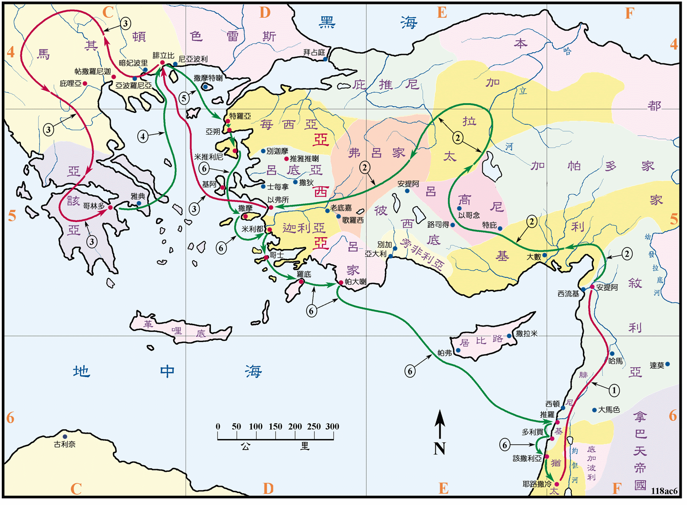

约是在主后52至54年之间

行动线说明
| 序号 | 圣经 | 说明 |
|---|---|---|
| 1 | 徒18:23 | 保罗从耶路撒冷到安提阿，住了些日子，又经加拉太和弗吕家去坚固众门徒。 |
| 2 | 徒19:1-40 | 保罗到以弗所传讲福音，有三个月之久。 |
| 3 | 徒20:1 | 保罗往马其顿去。 |
| 4 | 徒20:2 | 保罗走遍了马其顿，后到希腊住了三个月。 |
| 5 | 徒20:6-12 | 保罗从腓立比到特罗亚。 |
| 6 | 徒20:13-21:15 | 保罗步行到亚朔，再乘船到米推利尼、撒摩、米利都、哥士、罗底、帕大喇、推罗、多利买、该撒利亚回到耶路撒冷。 |
保罗在此趟旅途中，在以弗所写下了哥林多前书，在马其顿写了哥林多后书，又在哥林多写了罗马书。